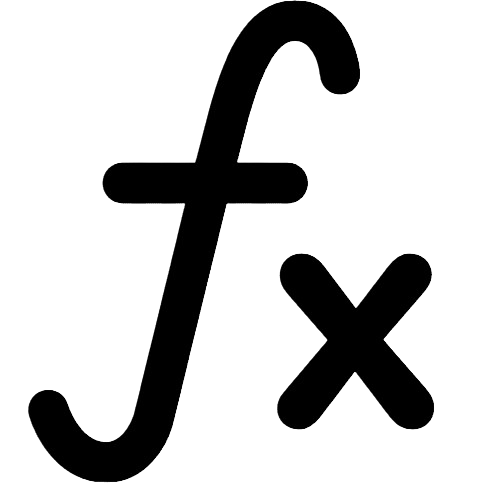

Salah satu aplikasi dari konsep turunan adalah menentukan titik minimum atau maksimum suatu fungsi. Suatu fungsi akan mencapai optimal (minimum atau maksimum) jika gradiennya sama dengan nol (m = 0). Karena gradien sama dengan turunan pertama dari fungsi tersebut maka turunan pertama dari fungsi sama dengan nol (f'(x) = 0). Titik-titik di mana turunan pertama f'(x) = 0 disebut titik stasioner.